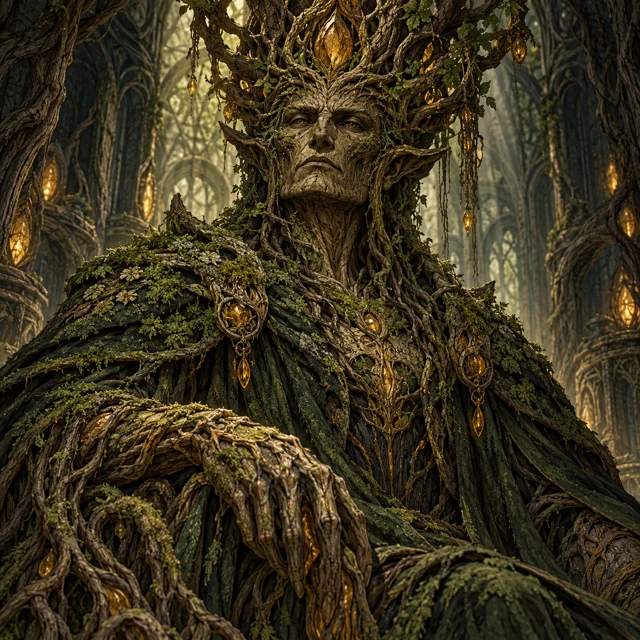
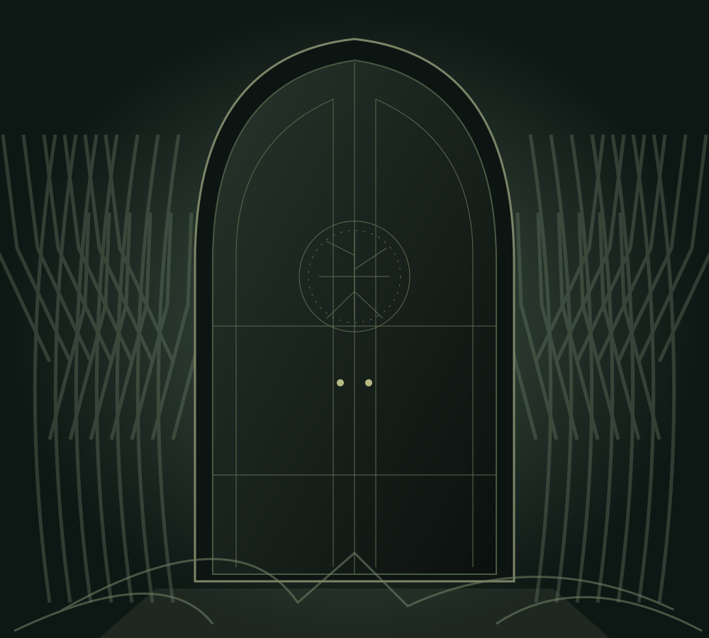

OMEGA · ACTIVE BINDING
The Root Sovereign
Supreme administrative authority of the firm. Exerts gravitational influence over forest boundaries and corporate acquisitions.
APEX COUNCIL / DEEP-FOREST PRIMEVAL ENTITY
Examine the dossier → ROOT & RITUAL
ROOT & RITUALWhere ancient wilderness meets uncompromising administrative calculus. Enter an archive of sovereign entities, forbidden relics, and contracts that refuse to die.
Explore Jeremy A. Henry’s original supernatural archive, alongside character guides from fiction, mythology and folklore. Browse a collection or search for a name.
EVERY ENTITY HAS A RECORD. EVERY PACT LEAVES A ROOT.

From the Apex Council to the celestial auditors. Find your way through the branches.
Explore domains →II / REGISTRYSearch entities, inspect contracts, and trace the records behind every name.
Open the ledger →III / CONTEXTConsult the supplied notes on mythology, faith traditions, cryptids, and prophecy.
Read the library →
Supreme administrative authority of the firm. Exerts gravitational influence over forest boundaries and corporate acquisitions.
APEX COUNCIL / DEEP-FOREST PRIMEVAL ENTITY
Examine the dossier →Root & Ritual is neither mere corporation nor secret coven—it is an enduring geological and metaphysical architecture. We operate at the intersection of primordial wildness and absolute legalistic machinery. Here, pacts are carved into petrified ironwood, and every decree is bound by ancient operational law.
Operatives navigating this domain understand that survival requires both the sovereign fury of the forest and the impenetrable armor of procedural ritual.